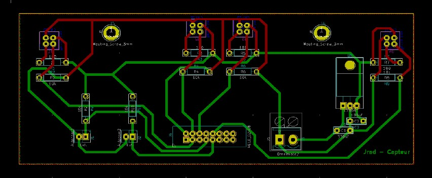
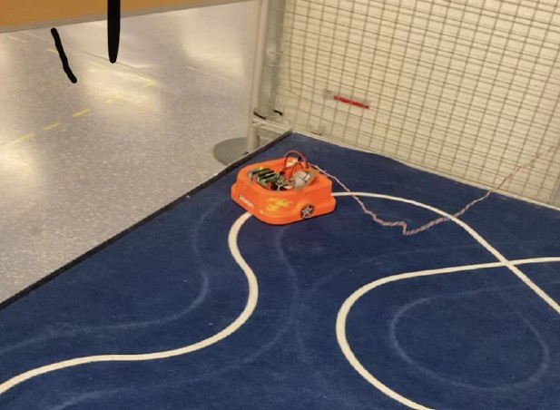

Duration
Septembre 2020 - Janvier 2021
Location
IUT de Cachan
Description
Through the Gamel Trophy project, I designed and built an autonomous line-following robot, significantly enhancing my skills in electronics and programming. This challenging endeavor allowed me to apply theoretical knowledge to a practical, real-world problem. I developed proficiency in PCB design, creating sensor and power boards using KiCad. This experience honed my skills in circuit design and component selection. I gained hands-on experience in soldering and troubleshooting electronic circuits, crucial skills for any robotics engineer.
In programming, I improved my abilities in embedded systems development, working with the PIC18F4550 microcontroller. I implemented a state machine and developed efficient algorithms in C for line following, enhancing my problem-solving and logical thinking skills. The project also strengthened my project management abilities. I learned to work under time constraints, balance different aspects of the project, and overcome unforeseen challenges. These experiences have prepared me well for future, more complex engineering projects.
